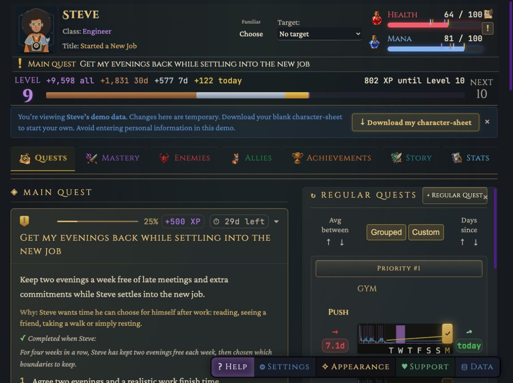
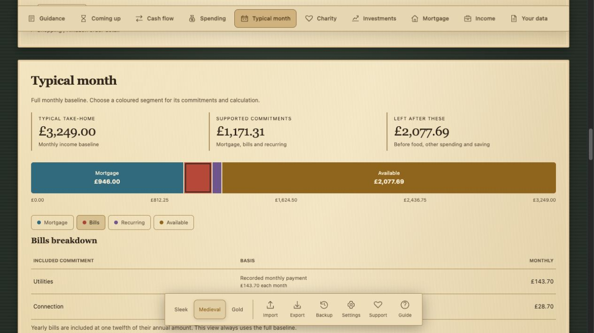

ControlPlane
Helping teams understand and secure critical systems and AI.
“be specific or be disappointed” / Sam’s maxim
Sam Holmes
How can we make powerful systems easier to understand, protect our agency within them, and use them mindfully without losing sight of what matters most?
Helping teams understand and secure critical systems and AI.


See where your money goes and what a typical month leaves available.
Demo release in preparation
Two outsiders trying to choose a life they no longer want to escape from.


Your Codex limits and reset times at a glance, across multiple accounts.
Our time and attention are finite. I want to use mine to make cool things, help people, and take part in the world, rather than hand it to systems and tech designed to keep us passive and consuming.
Technology is becoming exponentially better at hijacking attention, desire, and ultimately attachment. People need low-cost, easy-to-use tools and space to notice what is shaping them. My hope is that, through fighting fire with fire, we can use the same powerful technologies to empower people to make their own choices and live in alignment with their own values.
Looking properly at the world and ourselves, and staying open long enough to be changed by what we find. Exploring how our brains predict and interpret the world, IFS therapy and embracing neurodivergence have all helped me make sense of attention, motivation and inner conflict.